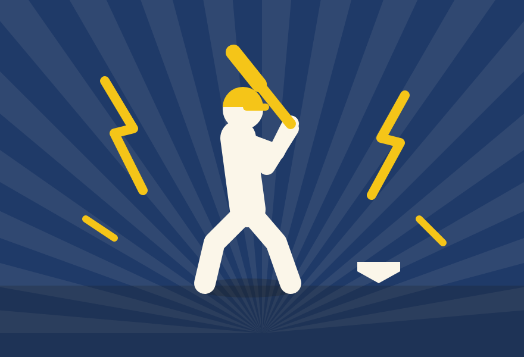

Two kinds of cards

From a general code: a random card from a visible pool, every card equally likely.
Tradeable. Value from sets, story and the swap.
From a specific code: one card, because of something you did.
Never traded. Presence stays with the fan who was there.
Pools start around 24 cards per team per season: too big to finish alone, easy to finish by trading with your section. No tiers, no “rare” labels.
Banana Cards · 6